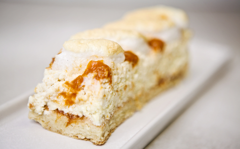

Tudtad, hogy a Rákóczi túrós nem a fejedelemről, hanem Rákóczi János cukrászról kapta a nevét?
Ez az omlós tésztájú édesség már az 1964-ben megjelent szakácskönyvében is fellelhető.
A tésztát érdemes egy nappal a sütés előtt összegyúrni.

Hozzávalók
Tésztához:
12 dkg finomliszt
7 dkg margarin
3 dkg eritrit
1 FUCHS SZABADTARTÁSOS TOJÁSsárgája
2 dkg totu (krémes állagú)
1 csipet só
1 mokkáskanál sütőpor
Töltelékhez:
50 dkg totu (ebből 10 dkg krémesre keverve)
2 FUCHS SZABADTARTÁSOS TOJÁSsárgája
3 dkg búzadara
fél citrom leve és héja
1 mokkáskanál vanília őrlemény
6 dkg eritrit
1 FUCHS SZABADTARTÁSOS TOJÁSfehérje habbá verve
Habhoz:
3 FUCHS SZABADTARTÁSOS TOJÁSfehérje
2-3 evőkanál eritrit
baracklekvár
Elkészítése
A lisztet, eritritet, a sót és a sütőport összekeverjük, a hideg margarint felkockázzuk és összekeverjük a lisztes
keverékkel, a kezünkkel összemorzsoljuk. Ezután hozzáadjuk a tojássárgáját és a totut és gyors mozdulatokkal
összeállítjuk a tésztát.
Ezután kinyújtjuk a tésztát kb ujjnyi vastagra és a sütőpapírral bélelt tepsi aljára terítjük.
180°C-on 15 percig elősütjük.
Amíg sül a tészta elkészítjük a totus krémet. A tojásfehérjét kemény habbá verjük. A totuhoz keverjük az édesítőt,
a vaníliát, a búzadarát, a citrom levét és héját és a tojássárgáját, majd beleforgatjuk a tojásfehérjehabot is.
Lekenjük az elősütött tésztát vékonyan baracklekvárral, majd egyenletesen rásimítjuk a tölteléket és visszatesszük
a sütőbe 25-30 percre.
Közben elkészítjük habot a tetejére. A tojásfehérjét félig felverjük, majd hozzászórjuk az édesítőt és kemény habbá
verjük. Habzsákba tesszük. Ha nincs habzsákunk, akkor egy nylon zacskóba töltjük és kivágjuk az egyik sarkát.
Ha letelt a sütési idő, kivesszük a formát, majd a totus töltelék tetejére csíkokat nyomunk a habból. A csíkok közé
baracklekvárt töltünk és visszatesszük a sütőbe 8-10 percre. Akkor jó, amikor kezd színt kapni a fehérjehab.